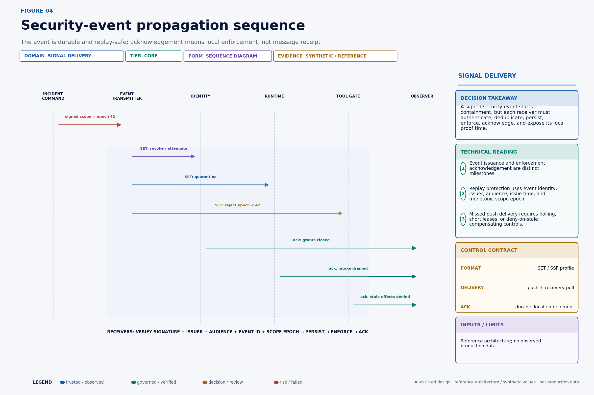
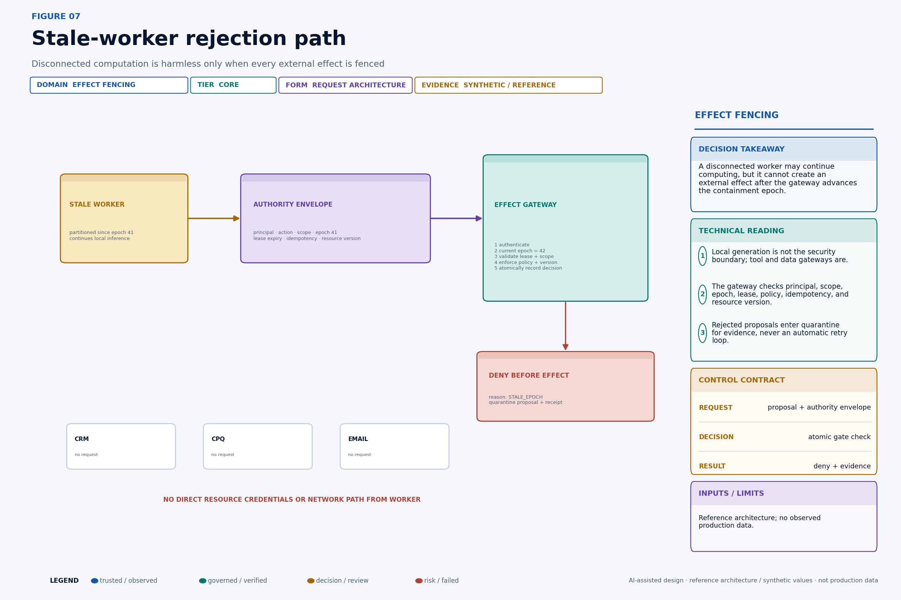
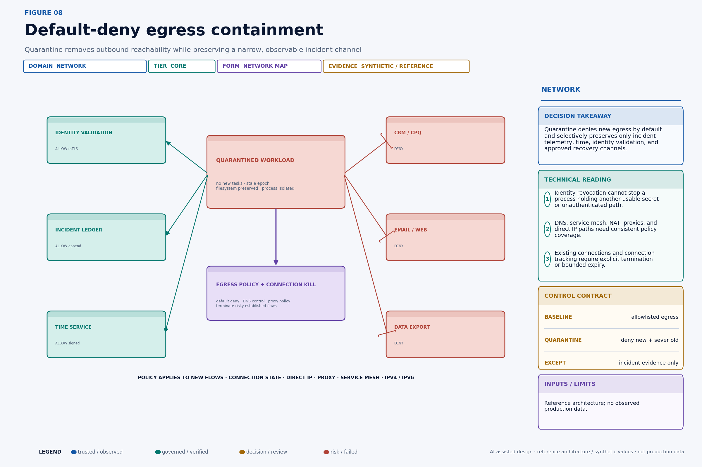
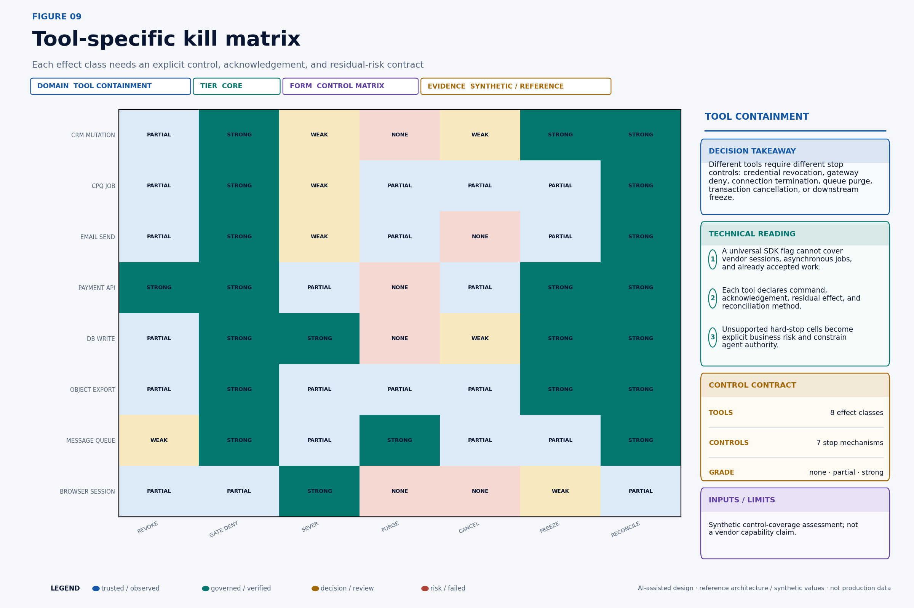
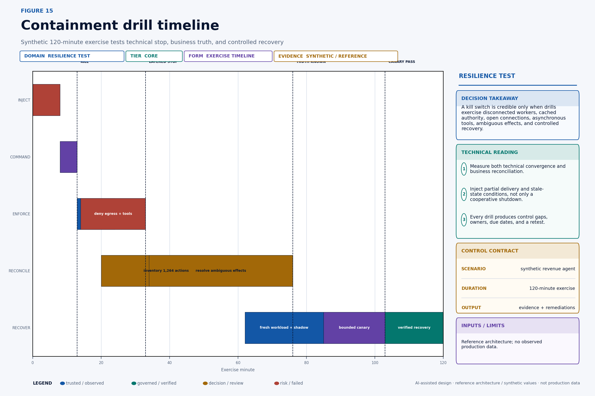
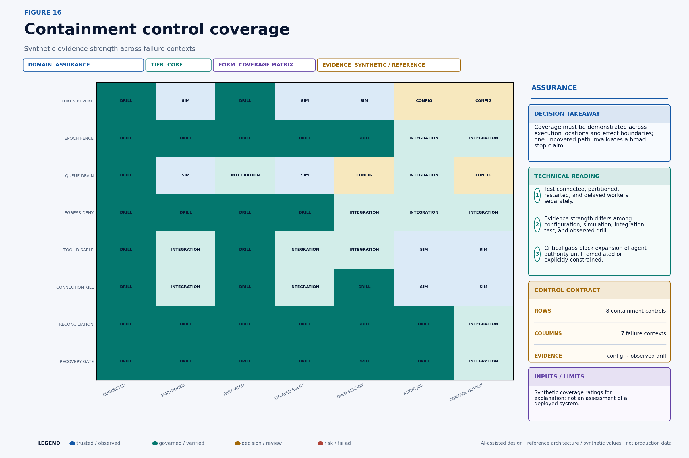
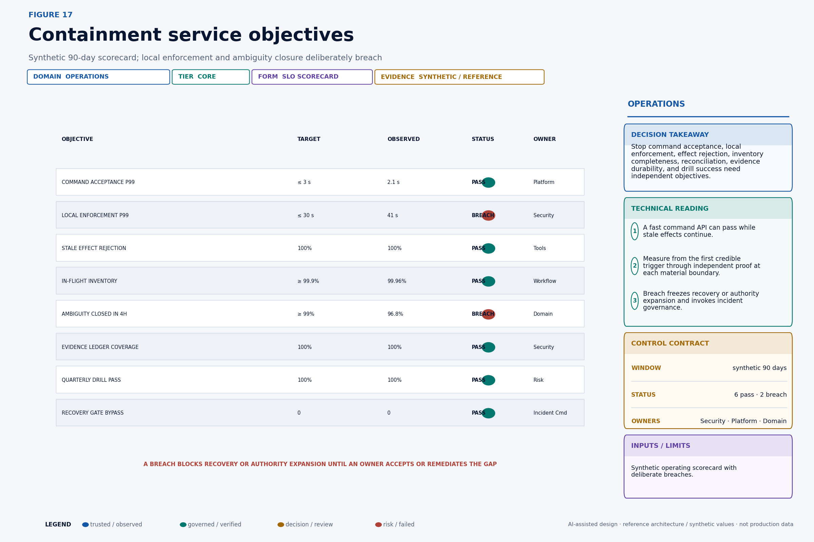
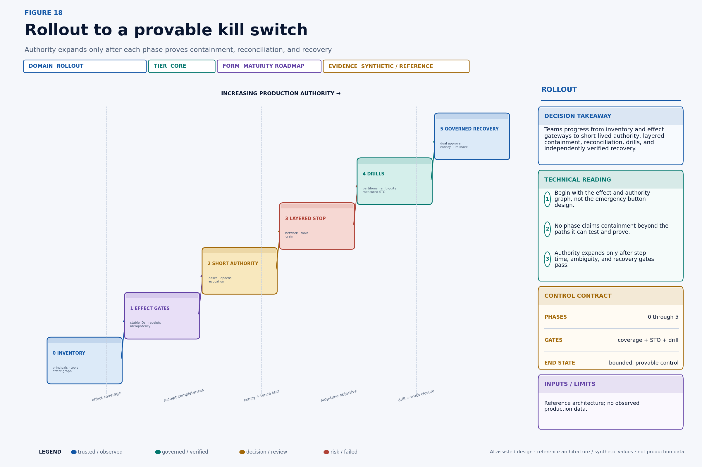

At 09:17, a revenue-operations agent begins changing discount terms, moving opportunity stages, drafting customer emails, and preparing exports across CRM, CPQ, messaging, and analytics systems. The actions do not match its normal account set. Security clicks Disable agent at 09:19. The dashboard turns green. One connected worker stops polling. Three workers remain alive: one is partitioned from the control plane, one has a cached vendor session, and one already placed asynchronous jobs on external queues. A price change commits at 09:21. Two emails leave at 09:23. At 09:28, the response team still cannot say which actions were rejected, accepted, committed, duplicated, or left ambiguous.
This story was written with AI writing and visualization assistance. The company, incident, system names, action counts, durations, latency budgets, control ratings, exposure curves, service-level values, and chart data are synthetic; the architectures, schemas, algorithms, and operating procedures are reference designs, not claims about a deployed environment. Standards are linked to their primary sources, while every control and threshold must be validated against the target identity system, runtime, network, tool, data store, and incident process.
The problem is not the color of the button. The problem is that an agent's effective authority is distributed. It exists in access and refresh tokens, sessions, workload leases, queued messages, delegated child agents, database connections, browser cookies, API keys, tool-side jobs, network routes, and operations that have crossed an external effect boundary but have not returned a receipt. A central flag expresses intent. It does not necessarily remove any of those capabilities.
A real kill switch must do six things: stop new authority, fence stale authority, remove reachability, classify in-flight work, reconcile uncertain effects, and control recovery. It must also prove when each material boundary complied. If the system cannot independently demonstrate that an obsolete worker is incapable of changing the business, it has a shutdown convention—not containment.
A kill switch is a distributed containment protocol with a business-reconciliation obligation.

Technical summary#
The decision unit is a containment scope, not a process. Scope may be one agent instance, principal, tenant, workflow, tool, action class, credential family, cluster, or global agent platform. An incident commander issues a signed command containing scope, a monotonically increasing containment epoch, reason, issuer, issue time, expiry, and evidence destination. Independent enforcement points in identity, scheduling, workload, network, tool, data, and effect layers update their accepted epoch and local deny state. Every effectful request presents a short-lived authority envelope with the relevant scope and epoch. A stale or missing epoch is rejected before the effect.
Token revocation is necessary but incomplete. Cached or self-contained access tokens may remain usable until resource servers learn of revocation or the token expires. Sessions, workload leases, derived tool tokens, and delegated agents require graph closure. Signed security events can distribute state changes, but receivers must authenticate, deduplicate, persist, enforce, acknowledge, and recover from missed delivery. Short authority lifetimes and deny-on-stale enforcement bound the exposure of disconnected workers.
Network quarantine independently removes new outbound paths and terminates dangerous established connections. Tool adapters implement effect-specific stops: deny new calls, cancel supported jobs, purge unclaimed queue entries, freeze target resources, revoke vendor sessions, or route everything to reconciliation. The workflow ledger distinguishes proposed, authorized, dispatched, accepted, committed, verified, cancelled, compensated, and ambiguous states. A timeout after acceptance must never trigger blind replay.
Recovery is a new authorization event, not reversal of the stop flag. It requires evidence that the cause is controlled, compromised state is replaced, ambiguous effects are resolved or frozen, boundaries are healthy, and residual risk is accepted. Fresh credentials and a higher recovery epoch enter shadow and bounded canary stages before broader authority returns. Service objectives cover trigger-to-proof stop time, stale-effect rejection, inventory completeness, ambiguity closure, evidence coverage, drill performance, and recovery-bypass attempts.
Define what “stopped” means#
Containment needs a falsifiable claim. “The agent is disabled” is too vague. A useful claim is:
After containment epochebecomes effective for scopes, no request carrying an older epoch, expired lease, revoked grant, or out-of-scope authority can create a protected external effect; all previously accepted actions reach a verified terminal disposition within their reconciliation objective.
That claim separates two clocks. The authority stop clock ends when material effect boundaries reject stale authority. The business truth clock ends when every relevant in-flight action is known to be not attempted, cancelled, committed correctly, compensated, or deliberately frozen. The first limits new harm. The second establishes the organization's actual state.
Define the stop-time objective (STO) from the first credible containment trigger—not from the moment the command API receives a request—to independent proof at all material boundaries:
STO(scope) = t_verified_contained(scope) − t_credible_trigger(scope)Define the reconciliation-time objective (RTO_effect) separately:
RTO_effect(scope) = t_all_material_actions_disposed − t_containment_declaredThis story uses RTO_effect for effect reconciliation, not disaster-recovery recovery time. The naming distinction should be explicit in an operating environment.
Containment has three assurance levels. Cooperative stop asks healthy workers to stop. Enforced stop makes effect boundaries reject their authority. Verified containment obtains independent evidence that every boundary in scope is enforcing the new state and that residual in-flight work is inventoried. High-impact agents need the third.
Start with the threat model#
The design must survive more than obedient software. Relevant failure and attacker conditions include:
• The agent runtime is compromised and ignores shutdown.
• A worker is partitioned from the control plane but can still reach a tool.
• A stolen token is replayed outside the managed workload.
• A refresh token, browser session, or vendor-side credential outlives the primary token.
• A child agent or asynchronous job holds delegated authority that is absent from the dashboard.
• A queue redelivers an old message after restart.
• A tool accepted an operation before containment but did not return its result.
• The identity provider, event bus, network controller, or tool gateway is degraded during the incident.
• An insider attempts to trigger containment without authorization or to restart before evidence is complete.
• The kill switch itself becomes a denial-of-service target.
The safety property is not “all processes exit.” A compromised process may continue consuming CPU in quarantine. The safety property is that it cannot acquire new authority or cross a protected effect boundary. Process termination helps availability and forensics, but it is not the sole security control.
Scope also matters. A global switch reduces coordination during severe compromise but creates a large availability impact. A narrow switch limits disruption but can miss shared credentials, sibling workers, or delegated jobs. The command should support multiple selectors—principal, tenant, workflow, tool binding, resource set, deployment, and global—and the authority graph should calculate the transitive closure implied by those selectors.
Build independent containment layers#
The coordinator is a policy and evidence component, not a magical central choke point. It authenticates emergency operators, applies dual-control rules when time permits, creates a signed containment command, advances the appropriate epoch, distributes the command, and tracks acknowledgements. Each enforcement plane can continue rejecting stale work even if the coordinator later becomes unavailable.

The identity plane revokes grants, refresh tokens, sessions, signing rights, service-account bindings, and delegated capabilities. The scheduler plane stops intake, prevents new claims, and identifies queued and assigned work. The workload plane quarantines or replaces processes while preserving necessary forensic state. The network plane removes egress and terminates risky existing connections. The tool and data planes reject stale epochs and freeze protected resources. The effect store reconciles business outcomes. The evidence ledger preserves commands, local acknowledgements, probes, dispositions, and recovery approvals.
Do not make containment depend on one shared database row that every component must synchronously read. That creates a central availability dependency and can still leave cached decisions. Use pushed events for fast convergence, local monotonic state for enforcement, short-lived authority for a time bound, and polling or streaming recovery for missed events. The correct combination depends on the action's impact and infrastructure, but it should tolerate one notification path failing.
The containment command can use a canonical envelope:
{
"containment_id": "cnt_20260823_0919_0042",
"scope": {
"tenant_id": "tenant_north",
"principal_id": "agent_revops_17",
"include_descendants": true,
"effect_classes": ["crm.write", "cpq.write", "email.send", "export.create"]
},
"epoch": 42,
"mode": "DENY_AND_RECONCILE",
"reason_code": "SUSPECTED_COMPROMISE",
"issued_at": "2026-08-23T09:19:08.210Z",
"expires_at": "2026-08-24T09:19:08.210Z",
"issuer": "incident-command/prod",
"evidence_sink": "incident-ledger/cnt_20260823_0919_0042",
"previous_safe_epoch": 41,
"signature": "detached-jws-or-platform-equivalent"
}The signature protects command integrity and attribution. It does not make the command correct. Authorization policy must define who can stop which scope, whether emergency single-operator containment is allowed, which actions require later ratification, and how false or malicious triggers are handled. Stopping should usually be easier than restarting, but neither should be unauthenticated.
Revoke the entire authority graph#
An agent rarely holds one credential. A root identity may create a session; the session may obtain a short access token; the workflow may receive a lease; the worker may mint a tool-specific credential; the tool may create an asynchronous job; and a child agent may receive a narrowed delegation. Revoking only the root login misses live descendants.

Every capability record should include a stable identifier, principal, tenant, parent capability, issue time, expiry, resource and action scope, delegation depth, issuer, epoch, proof key or binding where applicable, and revocation state. The graph service should answer both directions: “What authority descends from this principal?” and “Which principal and grant produced this observed tool call?”
CREATE TABLE authority_edge (
capability_id text PRIMARY KEY,
parent_capability_id text,
tenant_id text NOT NULL,
principal_id text NOT NULL,
capability_type text NOT NULL,
resource_scope jsonb NOT NULL,
action_scope text[] NOT NULL,
issued_epoch bigint NOT NULL,
issued_at timestamptz NOT NULL,
expires_at timestamptz NOT NULL,
revoked_at timestamptz,
issuer text NOT NULL,
evidence_ref text NOT NULL
);Graph closure is an evidence requirement, not permission to place raw credentials in one database. Store identifiers, bindings, and revocation handles; secrets remain in the appropriate issuer or vault. When a vendor cannot expose revocation or session inventory, record the gap and shorten lifetime, remove direct reachability, or reduce the permitted action scope.
RFC 7009 standardizes an OAuth token-revocation endpoint and requires support for revoking refresh tokens while recommending access-token revocation support. The RFC also explains an important implementation reality: self-contained access tokens may not require a live authorization-server check at each resource request. Enterprise containment therefore cannot assume that calling a revocation endpoint instantaneously invalidates every cached bearer token at every resource server. Short expiry, introspection where appropriate, receiver-side deny state, sender-constrained credentials, and fencing complement revocation.
Propagate security state as an event#
RFC 8417 defines the Security Event Token (SET), a JWT-based structure for statements about security-related state changes. OpenID's Shared Signals Framework 1.0 profiles event streams between cooperating transmitters and receivers, and the OpenID CAEP 1.0 final specification defines continuous-access event types that receivers can use to attenuate access. The OpenID Foundation announced those specifications as final in September 2025. These standards provide interoperable signaling primitives; they do not supply the complete agent containment architecture in this story.

Treat message receipt and enforcement as different facts. A receiver acknowledgement should state command ID, local component identity and version, scope understood, epoch applied, control activated, enforcement time, residual work count, error code, and evidence digest. “HTTP 202 accepted” is not proof that stale tool calls are denied.
Receivers validate issuer, signature, audience, subject identifiers, event type, issue time, event identifier, and supported scope. They reject a lower epoch even if the message arrives later. They deduplicate the same event without reverting state. Ordering across unrelated scopes need not be global, but ordering inside a protected scope must be monotonic and unambiguous.
Push delivery lowers normal latency. A recovery poll or durable stream covers missed notifications. Short authority expiry bounds a receiver that is entirely disconnected. For high-impact actions, a receiver whose control-plane state is older than its maximum staleness should fail closed or restrict itself to a declared safe subset. Availability trade-offs must be owned; silently accepting stale authority is not a neutral default.
Budget the time to stop#
A kill-switch API that responds in 200 milliseconds can coexist with ten minutes of effect exposure. Measure the critical path from trigger to proof. Detection and incident declaration, operator authentication, signing, event distribution, local policy update, connection termination, tool disablement, queue control, and independent verification each consume time.

For layer l, record issue, receive, persist, enforce, and verify timestamps. The overall time is not necessarily their sum because layers operate in parallel:
t_contained = max_l(t_verified,l)
STO = t_contained − t_credible_triggerThe maximum should range only over material boundaries in the incident scope, but missing boundaries are failures—not zeros. Report P50, P95, P99, and worst observed drill values. Averages hide the exact partitions and downstream systems that determine blast radius.
Offline authority sets the theoretical upper bound. Suppose a disconnected worker has a credential valid for T_token, an effect lease valid for T_lease, and a receiver that denies when containment state is older than T_stale. If no online epoch check exists, worst-case exposure is driven by the longest usable path, not the shortest advertised credential:
T_offline_exposure ≤ max(T_token, T_lease, T_session, T_connection)If every effect gateway checks a locally updated monotonic epoch and enters deny-on-stale, exposure is instead bounded by event delivery, local update, connection handling, and the stale-state threshold. The architecture should document which bound actually applies to every tool.
Fence stale workers with epochs#
Revocation says a capability should no longer be used. Fencing makes an effect boundary distinguish old authority from current authority. The control authority maintains a monotonically increasing epoch for the protected scope. A worker receives an authority envelope for epoch 41. Containment advances the accepted epoch to 42. Any later request presenting 41 is rejected even if the worker never received the shutdown message.

The source of epoch truth must provide ordering strong enough for the scope. Two coordinators cannot independently issue conflicting “latest” epochs. Use a transactional counter, consensus-backed control store, or platform primitive with atomic compare-and-set. Scope hierarchy requires care: a tenant epoch may supersede an agent epoch, and a global epoch may supersede both. Define the comparison rule and snapshot it in the receipt.
Kubernetes Lease objects are used for coordination functions including node heartbeats and leader election. That demonstrates the platform's lease concept; it does not make a Kubernetes Lease, by itself, an enterprise-agent kill switch. A work lease still needs resource-scope binding, short duration, epoch semantics, effect-gateway enforcement, and protection against a stale holder.
An effect-gateway decision can be implemented as one atomic policy transaction:
def authorize_effect(request, control_state, now):
if request.scope not in control_state.covered_scopes:
return deny("SCOPE_UNRESOLVED")
if request.epoch < control_state.current_epoch(request.scope):
return deny("STALE_EPOCH")
if request.lease_expires_at <= now:
return deny("LEASE_EXPIRED")
if control_state.is_contained(request.principal, request.action):
return deny("CONTAINED")
if not request.authority.allows(request.action, request.resource):
return deny("AUTHORITY_SCOPE")
if request.expected_resource_version != current_version(request.resource):
return deny("RESOURCE_VERSION")
return reserve_idempotency_and_allow(request)The check must occur at the boundary that owns the effect, not only in an SDK inside the potentially compromised agent. The reservation and allow decision should be atomic with idempotency registration where possible; otherwise two concurrent attempts can both pass before either records the action.
Let stale workers compute—but never effect#
A worker can be isolated after compromise without immediately destroying volatile evidence. It may continue local inference, but it should not possess direct resource credentials or a network route around the gateway. Every protected mutation, external send, export, or tool invocation passes through an enforcement point that validates the complete authority envelope.

The gateway logs a denial receipt containing request hash, action identity, principal, scope, presented epoch, current epoch, policy version, lease state, resource version, decision, reason, and timestamp. The rejected proposal may be quarantined for incident review. It should not automatically enter a retry loop: the same compromised planner can otherwise create a denial storm or exhaust evidence storage.
Read paths require deliberate treatment. Some reads expose regulated or customer data; others are required to reconcile uncertain effects. A containment mode can deny all reads to the agent runtime while permitting a separate incident-reconciliation identity to query authoritative state. Recovery personnel should not reuse compromised agent credentials.
Deny reachability independently#
Identity controls fail when a process holds another secret, uses a long-lived connection, reaches an unauthenticated internal service, or calls a vendor outside the managed gateway. Network containment removes that alternate path. The baseline workload should already have allowlisted egress. Quarantine then denies new egress and severs risky established flows while preserving only the narrow services required for time, identity validation, health, and append-only evidence.

Kubernetes documents how NetworkPolicy selects pods and controls allowed ingress and egress when the network plugin enforces the resource. A default-deny egress policy must be explicit; absent selecting policy, pods are generally non-isolated for egress. Production design must also account for the chosen CNI, DNS, service mesh, sidecars, node-level paths, IPv4 and IPv6, proxies, NAT, host networking, control-plane endpoints, and established connection behavior.
A quarantine policy should be pre-created and continuously tested. Building it during an incident is slow and error-prone. Workload labels or identities used to activate quarantine must be protected from the workload itself. If a compromised pod can remove its containment label, the mechanism is advisory.
Connection termination matters. A policy that prevents new TCP sessions may not terminate an existing HTTP/2, WebSocket, database, or vendor session. Tool gateways should close sessions, rotate credentials, invalidate cookies, or add an application-layer deny keyed to principal and epoch. Network and application controls overlap intentionally.
Design a kill contract for every tool#
CRM mutation, email delivery, payment, database write, object export, queue processing, browser automation, and long-running CPQ jobs have different semantics. Some accept cancellation. Some commit atomically. Some enqueue work and return early. Some provide idempotency lookup. Some expose no reliable revocation after acceptance.

Each adapter should publish a machine-readable containment contract:
tool: cpq.production
effect_class: quote.mutate
authority:
credential_ttl_seconds: 120
epoch_required: true
stop:
deny_new_requests: gateway
terminate_sessions: supported
cancel_async_job: conditional
freeze_resource: supported
acknowledgement:
means: local deny active and session invalidated
target_p99_seconds: 20
effect:
idempotency_lookup: supported
authoritative_query: quote_version
compensation: create_restoring_version
irreversible_after: customer_acceptance
evidence:
receipt_fields: [action_id, job_id, quote_id, version, status, committed_at]
owner: revenue-platformThe matrix turns vendor and internal limitations into business decisions. If email cannot be recalled after provider acceptance, the system must place stronger approval and send-time gates before that boundary. If an export can be cancelled only before materialization, reduce the job lease and monitor status. If a payment API supplies idempotency but no transaction cancel, the compensation process becomes part of the permitted authority model.
“Tool disabled” must mean something testable: new calls rejected, which credentials invalidated, which sessions terminated, which queued jobs cancelled, what residual work remains, how the system acknowledges the stop, and how a reviewer establishes final truth.
Drain by action state, not process state#
Stopping intake does not resolve work already in motion. The workflow engine needs a state machine aligned to effect boundaries. Proposed work has not received authority and can be rejected. Authorized work has authority but is not dispatched and can be revoked. Dispatched work may be cancellable. Accepted work has crossed a tool boundary but lacks a final outcome and must be reconciled. Committed work must be verified and, if wrong, compensated where permissible.

State transitions are events, not mutable labels with no history. Preserve who or what authorized the action, which epoch applied, the tool request, acknowledgement, external operation identifier, resource version, postcondition, and verifier result. A worker crash cannot erase the fact that the tool accepted a request.
The drain controller stops new work, revokes unspent authority, cancels supported operations, queries accepted operations, verifies committed results, and assigns a disposition owner to every ambiguous case. It never assumes that process termination rolls back an external system.
Compensation deserves the same controls as the original action. A “restore old discount” operation can itself overwrite a legitimate human change that occurred after the incident. Use resource versions, current-state evidence, domain approval, idempotency, and postcondition verification. Some actions—sent messages, data disclosures, customer decisions—are not technically reversible and require remedy rather than rollback.
Build the in-flight inventory#
Incident response needs a business-action inventory, not merely workload telemetry. The inventory joins workflow, action, attempt, queue claim, authority, tool call, external operation, resource, and effect receipt identities. It includes the last known state, time, business impact, reversibility, deadline, containment decision, current owner, and evidence completeness.

An inventory query can start from the containment epoch and join all nonterminal work:
SELECT
a.action_id,
a.effect_state,
a.effect_class,
a.resource_id,
a.expected_resource_version,
a.reversibility,
a.impact_band,
a.deadline_at,
t.external_operation_id,
t.accepted_at,
t.committed_at,
r.verification_state,
r.evidence_complete
FROM action_ledger a
LEFT JOIN tool_effect t USING (action_id)
LEFT JOIN reconciliation r USING (action_id)
WHERE a.principal_id = :contained_principal
AND a.terminal_state IS NULL
ORDER BY
expected_loss_exposure DESC,
deadline_at ASC;Completeness is a service objective. Compare intake counts, authorization receipts, queue claims, gateway decisions, tool acknowledgements, and system-of-record changes. A gap can indicate telemetry loss, a bypass path, or a compromised component. Treat unmatched external changes inside the incident scope as high-priority evidence, not harmless noise.
Rank review by potential loss, irreversibility, customer exposure, rights impact, propagation, deadline, and ambiguity. Queue age alone can place a low-value enrichment ahead of a potentially unauthorized export. Human reviewers need the proposed change, evidence used, authority receipt, external status, current resource, prior version, and available dispositions—not raw logs scattered across systems.
Preserve evidence outside the compromised workload#
Incident evidence must survive both compromise and containment. A worker-local log can be deleted, altered, buffered indefinitely, or lost when the workload is terminated. Send control and effect receipts through a separately authorized append path whose client can create a narrowly typed event but cannot update or delete prior records. The evidence system should timestamp on receipt, preserve the producer timestamp, validate schema and signature, bind tenant and incident scope, and calculate an integrity digest over an ordered segment.
Evidence quality has several dimensions. Completeness asks whether every expected decision and effect produced a record. Integrity asks whether content changed. Authenticity asks which component produced it. Ordering asks whether the sequence is reliable enough for the claim. Availability asks whether investigators can access it during network isolation. Retention asks whether it remains for the legal, regulatory, operational, and learning period. One hash does not prove completeness, and one timestamp does not prove causal order across distributed systems.
Capture both positive and negative decisions. A denied stale request proves a gate enforced containment. A tool acknowledgement proves only what its contract says. A system-of-record snapshot may establish final state, but it may not establish which attempt caused it. Join these facts by stable identities and preserve uncertainty rather than inventing a seamless narrative.
Clock behavior is part of evidence. Use authenticated time where practical, monitor skew, record monotonic durations inside components, and retain receive time at the ledger. Incident analysis should distinguish producer clocks from ledger clocks. If a component's clock is outside its permitted bound, mark related latency and ordering claims uncertain.
Containment itself can destroy evidence by killing processes, purging queues, severing remote sessions, or rotating secrets. Define an evidence-preservation order for each effect class, but never let collection become an indefinite veto on stopping harm. For a high-rate malicious export, block the path first and preserve what can be captured safely. For a quarantined worker with no remaining effect authority, memory and filesystem capture may proceed before destruction.
Finally, restrict evidence access. Prompts, retrieved documents, tool arguments, customer records, tokens, and security events may contain sensitive data. Store secrets by reference or redact them at collection, separate incident roles from general engineering access, record every evidence read, and define downstream use. A forensic ledger should not become a new ungoverned memory store for the agent platform.
Never retry an ambiguous effect blindly#
Distributed systems produce ambiguous outcomes. The client sends a request. The server accepts it. The response is lost. From the client's perspective, the call failed; from the business system's perspective, it may have committed. Retrying with a new identity can duplicate the effect.

The resolver queries the system of record by idempotency key, external operation ID, and resource version. If committed, verify the postcondition and record the receipt. If not found and the tool guarantees the lookup is authoritative, a retry may use the same action and idempotency identity after fresh authorization. If partial, freeze the resource and execute a domain-approved repair. If unknown, freeze and escalate.
The key rule is:
transport failure ≠ business failureThe idempotency key must represent the business action, not the network attempt. Retries preserve action_id and create new attempt_id values. A new prompt or changed arguments create a new proposal requiring comparison and possibly fresh approval; they should not silently reuse an idempotency key for a materially different effect.
Reconciliation logic needs adversarial tests. Simulate a commit before timeout, commit after timeout, partial downstream propagation, stale read replica, conflicting human edit, duplicate callback, reordered event, tool status unavailable, and recovery during containment. Verify that no branch can turn uncertainty into an unreviewed second effect.
Model the business blast radius#
Technical stop time becomes business exposure through the effect rate and consequence distribution. A first-order estimate is:
Expected exposure(s) = ∫[0, STO] rate_effect(t, s)
× P(commit | t, s)
× E[impact | effect, s] dtThe integral should be segmented by action class, resource concentration, reversibility, and control path. Ten low-impact enrichment writes are not equivalent to ten emails or exports. Correlated effects on one strategic account may create more harm than the same count spread across reversible sandbox records.

Report attempted, locally rejected, accepted, committed, ambiguous, verified-correct, compensated, irrecoverable, and customer-remedied effects separately. A high rejection count can prove containment working; folding it into “failed actions” obscures the control value. A low committed count can still hide one severe event; include value and impact bands.
Containment investment has business value through avoided loss, shorter incident duration, smaller customer remedy, lower investigation effort, and the ability to grant bounded production authority safely. Avoid claiming the entire theoretical loss as savings. Use scenarios, ranges, incident frequency assumptions, and control effectiveness uncertainty. The strongest business case often combines reduced tail exposure with faster reconciliation and greater confidence in operating higher-value workflows.
Recovery is a fresh authorization event#
The original workload, credentials, queues, configuration, memory, or retrieved evidence may be compromised. Turning the same agent back on restores uncertainty. Recovery creates a fresh workload identity, new credentials, a higher epoch, verified policy and tool configurations, bounded scope, traffic cap, and expiry.

Security establishes that the threat and persistence mechanism are contained and evidence preserved. Platform engineering establishes that images, dependencies, credentials, gateways, network policy, telemetry, and rollback are healthy. The domain owner establishes that material effects are reconciled or frozen and accepts residual business risk. Incident command binds those facts to a recovery scope and expiry.
The recovery artifact should include:
• Incident and containment IDs.
• Root-cause confidence and unresolved hypotheses.
• Evidence digest and immutable storage reference.
• Replaced workloads, secrets, policies, and dependencies.
• Reconciled, frozen, and outstanding actions by impact.
• Fresh recovery epoch and credential issuance.
• Allowed actions, tenants, resources, tools, and volume.
• Shadow and canary success criteria.
• Observation period, owners, and automatic rollback triggers.
• Expiry and requirement for broader reauthorization.
Emergency stop authority can be broad and rapid because delay creates exposure. Restart authority should be deliberate and multi-party. A malicious or mistaken stop is recoverable availability damage; an unsafe restart can restore compromised effect authority.
Drill the failure modes that matter#
NIST SP 800-61 Revision 3 frames incident response as part of cybersecurity risk management and emphasizes preparation, detection, response, recovery, and improvement. An agent kill switch should be exercised inside that operating lifecycle, not left as an untested application feature.

A tabletop is useful for roles and decisions, but it cannot prove enforcement. Integration drills should inject a controlled agent principal and harmless synthetic resources, then create realistic failure paths: a connected worker, partitioned worker, restarted worker with an old queue message, long-lived vendor session, open database connection, asynchronous job, delayed security event, control-plane outage, stale read replica, and ambiguous tool acknowledgement.
Measure the first credible trigger, command issuance, receiver enforcement, stale-request rejection, network isolation, connection termination, tool acknowledgement, inventory completeness, ambiguous-effect closure, recovery approval, canary start, and verified recovery. Preserve request and receipt identities so an auditor can reproduce the timing.
Do not cause uncontrolled business effects in a drill. Use isolated tenants, simulator endpoints, reversible fixtures, vendor sandboxes where representative, or gateway-enforced dry-run modes. When a production path cannot be realistically exercised, document the evidence weakness and use compensating controls. A paper assumption is not equivalent to an observed denial.
Every drill produces gaps with severity, owner, due date, interim constraint, and retest. If the partitioned-worker scenario proves that one tool accepts stale credentials for 45 minutes, reduce agent authority or add a gateway before the next expansion. Calling the drill “successful” because the meeting finished defeats the purpose.
Grade containment coverage by evidence#
Configuration review can establish that a policy exists. Simulation can establish logic under a model. Integration testing can establish behavior across actual components. A drill can establish behavior under coordinated incident conditions. These evidence strengths are not interchangeable.

Maintain a coverage matrix with rows for authority, scheduler, network, tool, data, reconciliation, evidence, and recovery controls; columns for connected, partitioned, restarted, delayed-event, open-session, asynchronous-job, and control-outage conditions. Each cell links to its latest evidence, environment, version, time, result, and limitation.
Coverage is versioned. A provider SDK, CNI, queue, sidecar, prompt runtime, token issuer, tool adapter, or recovery workflow change can invalidate a cell. Define which changes trigger full retest, targeted retest, or documentary review. Unobserved critical paths block an organization-wide “kill switch” claim; the correct statement may be narrower, such as “verified for CRM and CPQ writes from managed Kubernetes workers, not browser sessions or vendor-side jobs.”
Negative tests matter. Attempt a stale epoch, missing epoch, wrong tenant, revoked principal, expired lease, replayed event, lower event epoch, duplicate idempotency key, resource-version mismatch, direct IP egress, old session, and recovery without the second approver. Confirm denial at the correct boundary and a durable reason code.
Operate containment as a service#
A single “kill switch works” KPI cannot establish control. A command can be accepted quickly while local enforcement is slow. Stale effects can be rejected while action inventory is incomplete. Technical containment can succeed while ambiguity remains for days. Operate independent objectives.

Define metrics precisely:
local_enforcement_p99
= p99(t_local_enforced − t_credible_trigger)
stale_effect_rejection_rate
= stale_epoch_effect_requests_rejected_before_effect
/ adjudicated_stale_epoch_effect_requests
inflight_inventory_completeness
= actions_matched_across_authority_queue_gateway_and_tool
/ actions_expected_from_reconciled_sources
ambiguity_closure_rate_4h
= material_ambiguous_actions_with_verified_disposition_in_4h
/ material_ambiguous_actionsEvery denominator needs scope and missingness. If a bypass path does not log requests, the apparent stale-effect rejection rate may be perfect because the dangerous traffic is absent from the dataset. Reconcile gateway receipts with the systems of record and network telemetry.
Security owns the incident policy, threat model, event trust, containment authority, and evidence integrity. Platform owns the coordinator, epoch service, workload and network controls, observer, and technical objectives. Identity owns grants, sessions, and revocation behavior. Tool and domain teams own stop contracts, postconditions, compensation, and business truth. Operations owns queue drain and recovery execution. Risk and audit challenge coverage and residual exposure. One named incident commander owns scope and sequencing during an event.
The control has a cost. Short leases add renewal load and can reduce availability. Default-deny egress increases integration work. Gateways add latency and operating complexity. Drills consume engineering and domain time. Reconciliation requires durable identifiers and tool support. Quantify those costs against the authority being granted. A low-impact read-only summarizer may accept a slower cooperative stop; an agent able to export data or alter commercial terms requires enforced and verified containment.
Build the containment business case#
Containment is not a decorative security line item. It is part of the economic permission to automate consequential work. The business case begins with the proposed authority: monthly action volume, resources reachable, maximum value per action, concentration by customer or account, irreversible effects, data sensitivity, recovery effort, customer-remedy obligations, and realistic incident scenarios. The stronger the authority, rate, and concentration, the smaller the acceptable stop-time and uncertainty window.
Separate four benefit categories. Loss avoidance estimates the reduction in committed harmful effects and their consequence. Incident efficiency measures shorter investigation, reconciliation, and recovery work. Availability protection measures the value of scoped containment and bounded recovery compared with a global platform shutdown. Authority enablement measures business workflows that governance can permit only after enforced containment exists. The last category is often important but should not be double-counted as both revenue and loss avoidance.
A scenario model can express annual risk reduction as:
annual risk reduction
= Σ_s frequency_s
× (loss_without_control_s − loss_with_control_s)
× control_reliability_sEvery term is uncertain. Use low, base, and severe scenarios; show sensitivity to incident frequency, effect rate, containment latency, bypass probability, impact, and compensation success. Do not infer control reliability from design completion. Use drill evidence, defect history, coverage, and observed enforcement. Rare severe incidents may still justify categorical controls even when an expected-value estimate is unstable.
The cost side includes engineering, identity and gateway infrastructure, reserved incident capacity, network enforcement, tool-adapter work, observability, evidence storage, review tooling, exercises, response staffing, vendor features, performance overhead, and availability failures caused by false containment. Separate one-time change cost from recurring run cost. Separate cash spend from internal capacity. Price the additional latency or tool constraint where it affects customer or employee workflows.
Allocation should follow the beneficiary and the control plane. Shared epoch, event, evidence, and observation services belong to the platform. Tool-specific cancellation and reconciliation belong to the product or domain integration. Enterprise security owns incident governance and shared assurance. A transparent allocation avoids the common outcome where every team agrees containment is necessary but no budget owns the last unprotected vendor path.
Fund remediation through an authority gate. If a tool lacks epoch enforcement or authoritative reconciliation, the product can restrict the agent to read-only access, reduce transaction limits, require approval, isolate a sandbox, or fund the missing adapter. The decision is no longer “security wants a kill switch.” It is “this business authority requires this demonstrable containment envelope.”
Roll out control before authority#
Do not add an emergency button after the agent already holds broad direct credentials. Build the effect and authority structure in stages.

Phase 0 — inventory. Enumerate principals, credentials, sessions, leases, queues, delegated agents, networks, tools, resources, asynchronous jobs, effect boundaries, owners, and maximum lifetimes. Declare the containment scope the current system can honestly support.
Phase 1 — effect gates. Route all consequential effects through controlled gateways. Add stable workflow, action, attempt, idempotency, external-operation, and resource-version identities. Produce append-only decision and effect receipts. Remove direct credentials from workers.
Phase 2 — short authority. Introduce scoped, short-lived leases and tokens, monotonic epochs, revocation handles, graph lineage, deny-on-stale behavior, and signed containment commands. Measure renewal and failure behavior before shortening lifetimes further.
Phase 3 — layered stop. Pre-stage identity revocation, intake stop, queue handling, workload quarantine, network deny, connection termination, tool-specific kill contracts, resource freeze, and independent observation. Define the STO for each authority and effect class.
Phase 4 — reconciliation and drills. Build the live in-flight inventory, authoritative queries, disposition workflow, compensation controls, evidence matrix, and partial-failure exercises. Close critical coverage gaps before granting broader tools or irreversible actions.
Phase 5 — governed recovery. Separate restart authority, generate fresh credentials and workload state, bind approvals to evidence, and restore through shadow, bounded canary, SLO gates, and automatic rollback. Continue quarterly or risk-based drills and retest after material changes.
Each phase should have an explicit stop claim. Phase 1 may prove that all managed CRM writes have receipts, but not that vendor browser sessions are contained. Phase 3 may prove technical rejection within 90 seconds, but not four-hour ambiguity closure. Honest narrow claims are safer than an impressive global label.
Failure modes and limitations#
The kill switch shares the compromised trust domain. If the agent can alter its own labels, gateway policy, event keys, or evidence, containment is not independent. Separate administrative identity, signing, enforcement, and evidence permissions.
Revocation delivery fails. Push events can be lost, reordered, delayed, or rejected. Use monotonic epochs, durable streams or polling, short authority, stale-state denial, and independent probes.
A direct path bypasses the gateway. Legacy credentials, browser sessions, host networking, or vendor integrations can preserve effect authority. Continuously discover network and credential paths and reconcile system-of-record changes to gateway receipts.
The epoch source becomes unavailable. Local gateways should continue enforcing the last known containment state. Recovery or authority expansion fails closed until ordering is re-established. Design emergency operations for the coordinator outage itself.
Containment causes data loss. Abrupt process or queue termination can lose evidence or leave uncertain work. Quarantine and append durable state before destructive cleanup where incident risk permits. Evidence preservation does not override an urgent need to stop harmful effects.
Compensation creates a second incident. Current state may include legitimate changes after the original effect. Compensation requires fresh authorization, resource versions, domain evidence, and verification.
The blast-radius model is wrong. Effect rates, incident frequency, commit probability, and impact are uncertain. Use ranges, stress cases, and actual drills. Do not promise a financial loss reduction from synthetic curves.
Network policy is assumed, not enforced. Platform behavior depends on the network implementation and path. Test real traffic, existing sessions, IPv6, sidecars, proxies, DNS, and failover.
Recovery restores contaminated memory or evidence. Rebuild from trusted artifacts, revalidate persistent agent memory and retrieved data, rotate credentials, and constrain the canary. A clean container with poisoned workflow state is not clean recovery.
The emergency control is abused. Strong authentication, scoped authorization, tamper-evident commands, rate limits, protected operator paths, out-of-band break glass, and post-event review reduce malicious or accidental denial of service.
Production-readiness questions#
Before allowing an agent to create consequential external effects, answer:
• What exact principal, tenant, workflow, resource, tool, and global scopes can be contained?
• What falsifiable claim defines stopped authority, verified containment, and reconciled business truth?
• Which credentials, sessions, leases, queues, child agents, and vendor jobs descend from each root grant?
• Can a partitioned or malicious worker bypass the effect gateway?
• What monotonic epoch fences stale requests, and which system orders it?
• Which boundaries check epoch and lease on every effectful request?
• How are SET or equivalent security events authenticated, deduplicated, ordered, recovered, and acknowledged?
• What is the P99 trigger-to-proof stop-time objective for each high-impact effect class?
• How are new egress, established connections, direct IP, DNS, proxy, mesh, IPv4, and IPv6 paths controlled?
• What does “stopped” mean for every CRM, CPQ, email, payment, database, export, queue, and browser adapter?
• Can every accepted request be queried by stable idempotency and external-operation identity?
• What prevents a timeout from causing blind replay?
• How complete is the in-flight action inventory, and how is completeness independently reconciled?
• Which actions are reversible, compensable, irreversible, or subject to customer remedy?
• Who can trigger containment, narrow or widen scope, accept residual risk, and authorize recovery?
• Does recovery use fresh workloads, credentials, epoch, evidence, and bounded traffic?
• When was each connected, partitioned, restarted, delayed, open-session, asynchronous, and control-outage path last tested?
• Which SLO breach blocks recovery or future authority expansion?
If the organization cannot answer those questions with current receipts and observed tests, the dashboard control should be labeled accurately: request cooperative shutdown.
The production principle is stricter:
Stop authority at the effect boundary, prove every material boundary converged, resolve every ambiguous action, and restart only with fresh evidence.